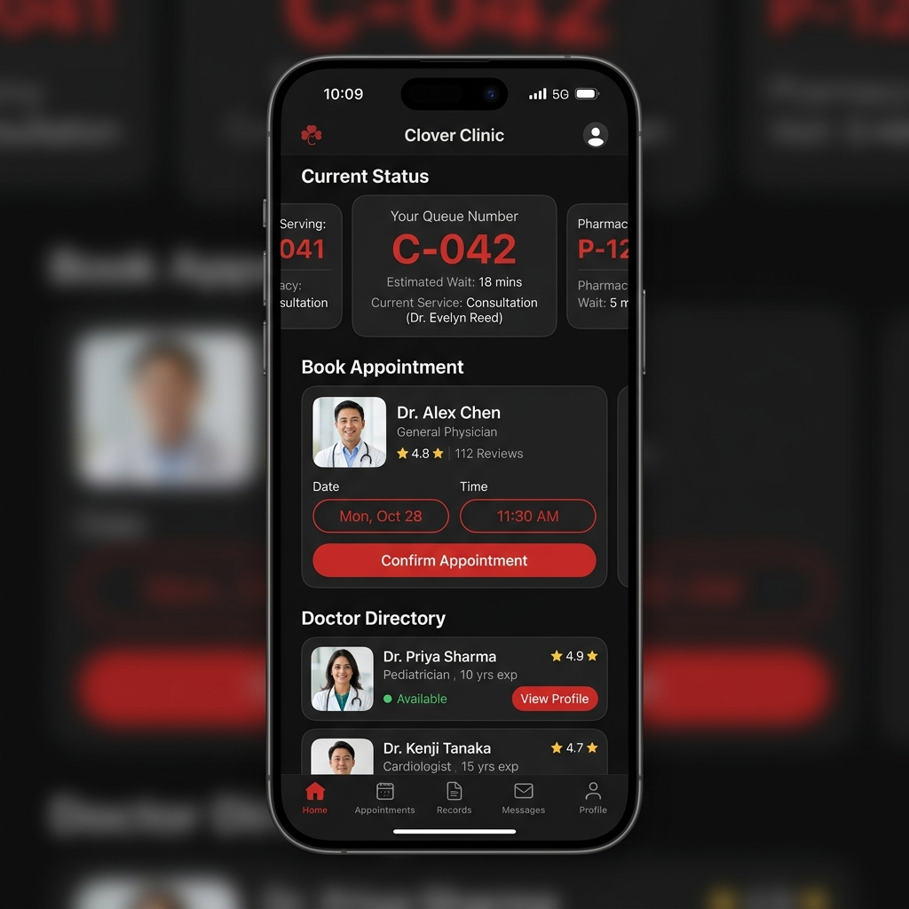

APK-Puskesmas — Healthcare Services Mobile App
Class / Personal Project

Project Evaluation Q&A
1. Project Summary
A comprehensive Flutter-based mobile application designed to streamline patient queue registration, health consultations, medical records tracking, and pharmacy drug logistics for a local community health clinic (Puskesmas).
2. Project Type
Class / Personal Project. Created to digitize administrative healthcare procedures and patient intake workflows.
3. Team & Role
Individual Project. I designed and developed the entire Flutter mobile application, including mobile UI, state management, local database models, and service routing.
4. Key Contributions & Impact
Successfully unified patient intake and consultation history in a single mobile interface, reducing average clinic check-in waiting times.
5. Learnings & Takeaways
Mastered cross-platform mobile app development in Flutter (Dart), state management, local storage, responsive layout design, and mobile-backend API integration.
Technologies
Flutter, Dart, SQLite, RESTful API, Git.
Key Skills Demonstrated
Mobile App Architectures, State Management, Local Storage, API Integrations, Cross-Platform UI Layouts.